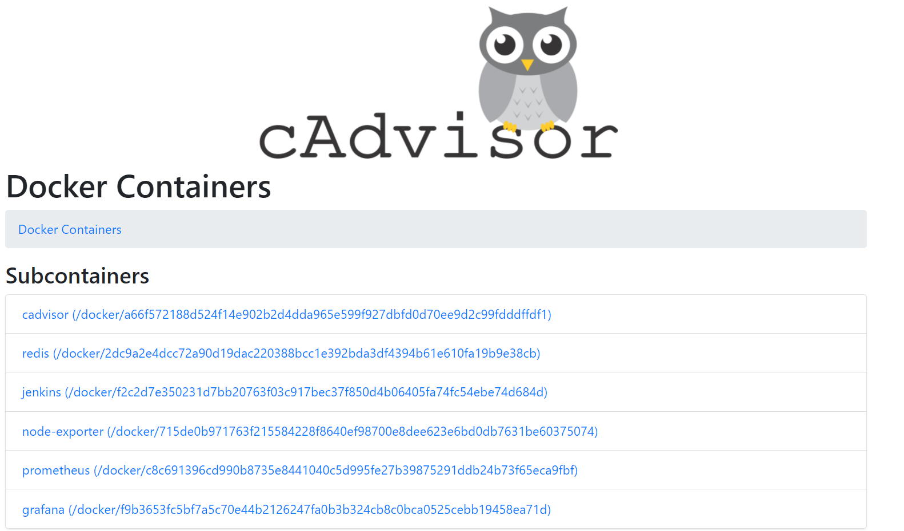
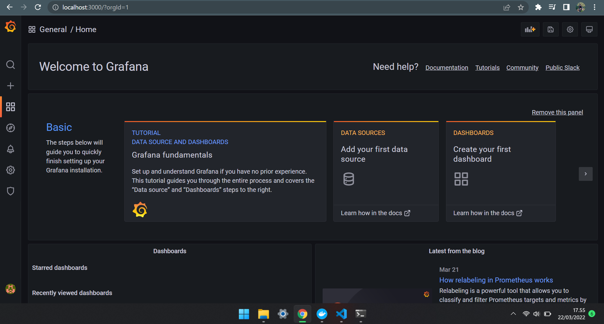
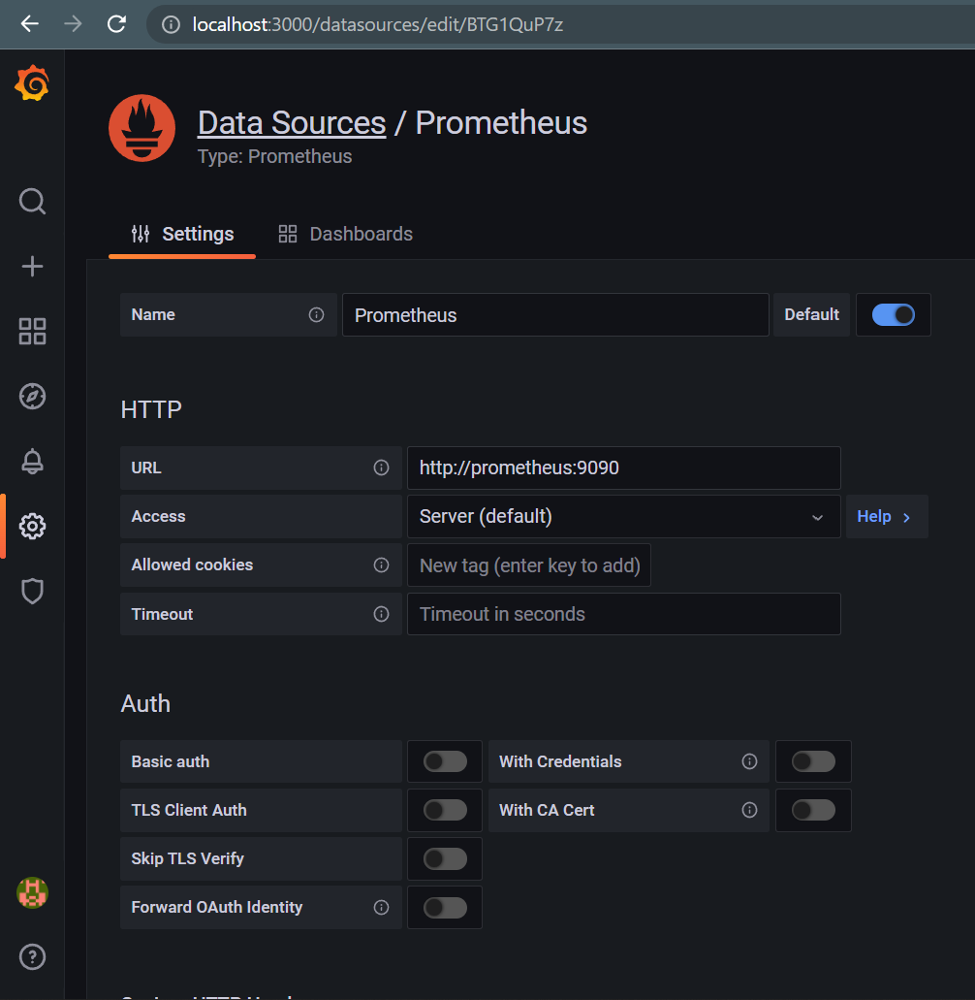
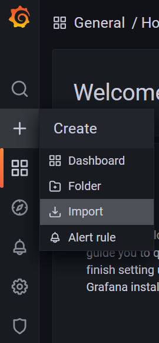
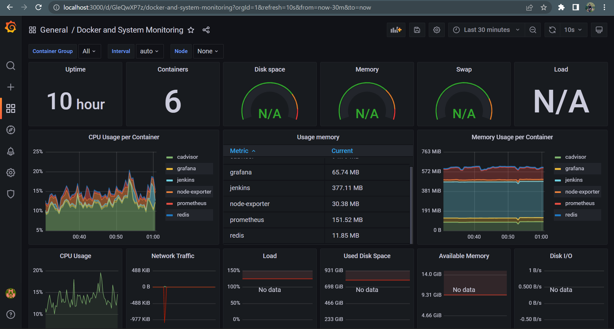

Tech Stack

Prasyarat
Ini adalah lanjutan dari post sebelumnya, Implementasi Kontainerisasi dan CI (Continuous Integration) Sederhana Menggunakan Jenkins. Agar lebih rapi, saya meletakkan Prometheus dan Grafana di satu jaringan Docker yang sama dengan kontainer yang dibuat di post sebelumnya, Jenkins dan Redis. Silahkan sesuaikan file docker-compose.yml jika ingin dibuat berbeda jaringan.
Lihat detail jaringan yang dibuat oleh Docker dengan cara
docker network lsdandocker network inspect network_name
Instalasi
Cp. 1: Setup Kontainer
Simpan file docker-compose.yml dan file config prometheus.yml berikut ini di dalam satu direktori yang sama.
1
2
3
4
5
6
7
8
9
10
11
12
13
14
15
16
17
18
19
20
21
22
23
24
25
26
27
28
29
30
31
32
33
34
35
36
37
38
39
40
41
42
43
44
45
46
47
48
49
50
51
52
53
54
55
56
57
# docker-compose.yml
version: '3.8'
services:
prometheus:
image: prom/prometheus:latest
container_name: prometheus
volumes:
- ./prometheus.yml:/etc/prometheus/prometheus.yml
command:
- '--config.file=/etc/prometheus/prometheus.yml'
- '--web.enable-lifecycle'
depends_on:
- cadvisor
ports:
- 9090:9090
networks:
- jenkins_network
cadvisor:
image: gcr.io/cadvisor/cadvisor:latest
container_name: cadvisor
ports:
- 8080:8080
volumes:
- /:/rootfs:ro
- /var/run:/var/run:ro
- /sys:/sys:ro
- /var/lib/docker/:/var/lib/docker:ro
command:
- privileged=true
networks:
- jenkins_network
node-exporter:
image: prom/node-exporter:latest
container_name: node-exporter
ports:
- 9100:9100
networks:
- jenkins_network
grafana:
image: grafana/grafana:latest
container_name: grafana
user: "1000"
environment:
- GF_SECURITY_ADMIN_PASSWORD=admin
depends_on:
- prometheus
ports:
- 3000:3000
networks:
- jenkins_network
networks:
jenkins_network:
external: true
## IMPORTANT:
## This project is designed to be on the same network as the Jenkins network: 'jenkins_network'.
## How to do that? Define name of jenkins network in every container (services.<container_name>.networks)
## and set networks.<network_name>.external to true.
1
2
3
4
5
6
7
8
9
10
11
12
13
14
15
# prometheus.yml
global:
scrape_interval: 15s
external_labels:
monitor: 'Monitoring'
scrape_configs:
- job_name: 'prometheus'
static_configs:
- targets: ['localhost:9090']
- job_name: 'cAdvisor'
static_configs:
- targets: ['cadvisor:8080']
- job_name: 'node-exporter'
static_configs:
- targets: ['node-exporter:9100']
Jalankan perintah berikut di dalam direktori di mana kedua file tersebut berada:
1
$ docker-compose up -d
Validasi bahwa kontainer telah berjalan dengan benar:
1
$ docker ps
Cp. 2: Validasi cAdvisor
cAdvisor bertugas untuk mengumpulkan informasi mengenai semua kontainer yang sedang berjalan. Informasi ini nantinya diambil oleh Prometheus lalu diteruskan ke Grafana. Di Grafana inilah informasi disajikan dalam bentuk grafik.
Pastikan cAdvisor telah berjalan dengan baik dengan cara akses ke dashboard cAdvisor http://localhost:8080/docker melalui browser. Lihat di bagian Subcontainers. Semua kontainer yang sedang berjalan ditampikan di sini.

Jika daftar kontainer dapat ditampilkan oleh cAdvisor, silahkan skip ke bagian Setup Grafana.
Namun jika tidak ada kontainer yang muncul sedangkan perintah docker ps menampilkan sebaliknya, dan jika kamu menggunakan WSL 2, maka besar kemungkinan cAdvisor salah dalam mencari ‘sumber’ kontainer. Ketahui errornya terlebih dahulu dengan cara:
1
$ docker logs -f cadvisor
Jika ada banyak error yang bertuliskan failed to identify the read-write layer ID for container ... open /rootfs/var/lib/docker ... no such file or directory, maka jalankan perintah berikut ini.
Secara default root directory Docker berada di /var/lib/docker. Khusus untuk WSL, lokasinya berada di tempat yang berbeda. Saya belum bisa menjamin apakah lokasinya selalu di wsl\docker-desktop-data\version-pack-data\community\docker. Mohon dipastikan terlebih dahulu. Link terkait: github.com/google/cadvisor/issues/2648.
1
2
3
$ cd /mnt
$ sudo mkdir my-docker
$ sudo mount -t drvfs '\\wsl$\docker-desktop-data\version-pack-data\community\docker' /mnt/my-docker
Perintah di atas akan membuat direktori baru yang bernama my-docker lalu menyambungkan root directory Docker yang berada di luar Ubuntu ke direktori /mnt/my-docker yang berada di dalam Ubuntu.
Setelah menjalankan perintah di atas, ubah baris 27 di file docker-compose.yml dari ini:
1
- /var/lib/docker/:/var/lib/docker:ro
Menjadi ini:
1
- /mnt/my-docker/:/rootfs/var/lib/docker:ro
Lalu silahkan build ulang dengan cara:
1
$ docker-compose up -d
Validasi kembali melalui URL yang sama. Seharusnya cAdvisor sudah bisa memperoleh data kontainer.
Setup Grafana
Akses dashboard Grafana di http://localhost:3000. Login dengan username admin dan password admin.

Agar Grafana terhubung ke Prometheus, kita harus menambahkan data source baru dengan cara klik Data Sources lalu pilih opsi Prometheus. Grafana akan mengarahkan kita ke halaman pengaturan. Di sini cukup isi form URL http://prometheus:9090. Gulir ke paling bawah halaman dan klik Save & Test.

Baik Grafana dan Prometheus sama-sama berada di satu jaringan Docker yang sama. Docker secara otomatis menghubungkan nama service (lihat baris 4 di
docker-compose.yml) ke alamat IP-nya. Karena itulah, hanya dengan menuliskanprometheus, Grafana bisa langsung tersambung ke kontainer Prometheus.
Langkah selanjutnya adalah merancang layout dashboard. Agar jauh lebih praktis, kita gunakan saja dashboard yang tersedia di internet. Caranya, silahkan navigasi ke menu Create lalu klik Import.

Di form Import via Grafana.com, isikan 893. Ini adalah ID dari dashboard grafana.com/grafana/dashboards/893. Jangan lupa klik Load. Selanjutnya, isi nama dashboard di form Name kemudian pilih Prometheus pada menu dropdown Select a Prometheus Data Source. Klik Import.
Selesai.
